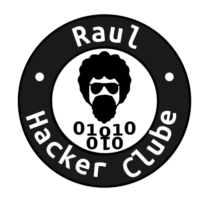

Raul Hacker Club, o início de um Hacker Space
Antonio Ladeia (AKA Ninguém)
Rafael Gomes (AKA Gomex)
raulhc-subscribe@lists.riseup.net
FISL — Porto Alegre/RS — Maio/2014
http://raulhc.cc
“Faz o que tu queres, pois há de ser tudo da lei”
-- Raul Seixas
Open Source
Open Hardware
creative commons
Hacker Space
"Um hackerspace é um espaço de trabalho gerido por uma comunidade onde pessoas com interesses comuns, muitas vezes em computação, usinagem, tecnologia, ciência, arte digital ou arte eletrônica, podem se encontrar, socializar e colaborar." wikipedia
Tudo começou no meio de 2012!

Já tivemos vários nomes
Hackerspace Bahia
Márcio Vítor Hacker Club
Hackerspace Salvador
Raul Hacker Club
O que já fizemos
Desenvolvimento de código SL
Mapeamento colaborativo
GEEA
Dead Drops